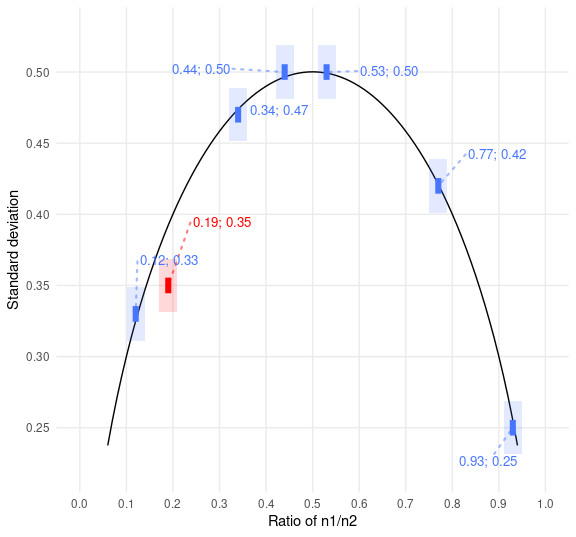

The goal of scrutiny is to test published summary statistics for consistency using techniques like GRIM and to check their plausibility. The package makes these methods easy to use in a tidyverse-friendly way. It hopes to help the new field of error detection go mainstream.
Besides ready-made tests, scrutiny features a complete system for implementing new consistency tests. It also has duplication analysis, more general infrastructure for implementing error detection techniques, as well as specialized data wrangling functions. See the Articles tab for vignettes.
scrutiny is a work in progress. You are welcome to contribute with pull requests. However, please open an issue first.
Install the package from CRAN:
install.packages("scrutiny")Alternatively, install the development version from GitHub:
remotes::install_github("lhdjung/scrutiny")Get started
Here is how to GRIM-test all values in a data frame. When using grim_map(), the consistency column tells you if the means (x) and sample sizes (n) are mutually consistent.
library(scrutiny)
# Example data:
pigs1
#> # A tibble: 12 × 2
#> x n
#> <chr> <dbl>
#> 1 7.22 32
#> 2 4.74 25
#> 3 5.23 29
#> 4 2.57 24
#> 5 6.77 27
#> 6 2.68 28
#> 7 7.01 29
#> 8 7.38 26
#> 9 3.14 27
#> 10 6.89 31
#> 11 5.00 25
#> 12 0.24 28
# GRIM-testing for data frames:
grim_map(pigs1)
#> # A tibble: 12 × 4
#> x n consistency ratio
#> <chr> <dbl> <lgl> <dbl>
#> 1 7.22 32 TRUE 0.68
#> 2 4.74 25 FALSE 0.75
#> 3 5.23 29 FALSE 0.71
#> 4 2.57 24 FALSE 0.76
#> 5 6.77 27 FALSE 0.73
#> 6 2.68 28 TRUE 0.72
#> 7 7.01 29 FALSE 0.71
#> 8 7.38 26 TRUE 0.74
#> 9 3.14 27 FALSE 0.73
#> 10 6.89 31 FALSE 0.69
#> 11 5.00 25 TRUE 0.75
#> 12 0.24 28 FALSE 0.72Test percentages instead of means:
pigs2
#> # A tibble: 6 × 2
#> x n
#> <chr> <dbl>
#> 1 67.4 150
#> 2 54.2 150
#> 3 54.0 150
#> 4 69.8 150
#> 5 68.1 150
#> 6 55.4 150
grim_map(pigs2, percent = TRUE)
#> ℹ `x` converted from percentage
#> # A tibble: 6 × 4
#> x n consistency ratio
#> <chr> <dbl> <lgl> <dbl>
#> 1 0.674 150 FALSE 0.85
#> 2 0.542 150 FALSE 0.85
#> 3 0.540 150 TRUE 0.85
#> 4 0.698 150 FALSE 0.85
#> 5 0.681 150 FALSE 0.85
#> 6 0.554 150 FALSE 0.85You can choose how the means are reconstructed for testing — below, rounded up from 5. When visualizing results, the plot will adjust automatically. Blue dots are consistent values, red dots are inconsistent ones:

Similarly, use DEBIT to test means and standard deviations of binary data:
pigs3
#> # A tibble: 7 × 3
#> x sd n
#> <chr> <chr> <dbl>
#> 1 0.53 0.50 1683
#> 2 0.44 0.50 1683
#> 3 0.77 0.42 1683
#> 4 0.19 0.35 1683
#> 5 0.34 0.47 1683
#> 6 0.93 0.25 1683
#> 7 0.12 0.33 1683
pigs3 %>%
debit_map()
#> # A tibble: 7 × 11
#> x sd n consistency rounding sd_lower sd_incl_lower sd_upper
#> <chr> <chr> <int> <lgl> <chr> <dbl> <lgl> <dbl>
#> 1 0.53 0.50 1683 TRUE up_or_down 0.495 TRUE 0.505
#> 2 0.44 0.50 1683 TRUE up_or_down 0.495 TRUE 0.505
#> 3 0.77 0.42 1683 TRUE up_or_down 0.415 TRUE 0.425
#> 4 0.19 0.35 1683 FALSE up_or_down 0.345 TRUE 0.355
#> 5 0.34 0.47 1683 TRUE up_or_down 0.465 TRUE 0.475
#> 6 0.93 0.25 1683 TRUE up_or_down 0.245 TRUE 0.255
#> 7 0.12 0.33 1683 TRUE up_or_down 0.325 TRUE 0.335
#> # ℹ 3 more variables: sd_incl_upper <lgl>, x_lower <dbl>, x_upper <dbl>
pigs3 %>%
debit_map() %>%
debit_plot()
Guiding ideas
(…) a critical inspection of the published literature should not be mischaracterized as a hobby for the overly cynical, nor as so-called “methodological terrorism”. On the contrary, carefully evaluating presented data is a cornerstone of scientific investigation, and it is only logical to apply this also to the published literature. If we are not willing to critically assess published studies, we also cannot guarantee their veracity.
— van der Zee et al. (2017, pp. 8-9)
(…) data thugs (…) demand data and if they do not receive it, they contact editors and universities and threaten to write blogs and tweets about the errors uncovered.
— Eric A. Stewart (six retractions; quoted in Pickett 2020, p. 178)
References
Pickett, J. T. (2020). The Stewart Retractions: A Quantitative and Qualitative Analysis. Econ Journal Watch, 17(1), 152–190. https://econjwatch.org/articles/the-stewart-retractions-a-quantitative-and-qualitative-analysis.
van der Zee, T., Anaya, J., & Brown, N. J. L. (2017). Statistical heartburn: An attempt to digest four pizza publications from the Cornell Food and Brand Lab. BMC Nutrition, 3(1), 54. https://doi.org/10.1186/s40795-017-0167-x.